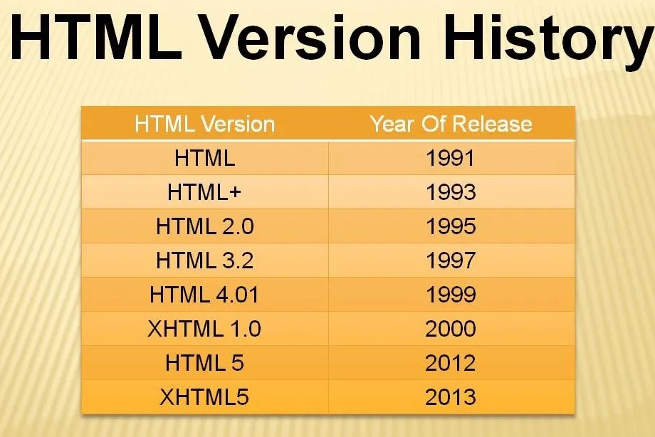

La travesía de HTML
HTML ha vivido un serie de cambios para llegar a ser lo que es hoy en día. Ha pasado de ser un lenguaje de marcado estructural a una plataforma de desarrollo completa gracias a las diversas implementaciones que han tenido lugar en cada una de las versiones posteriores.
Por esta razón, es importante mencionar los cambios que ha sufrido HTML a través de su historia.
Sección: Línea de tiempo con las versiones de HTML y sus características clave.
Evolución de HTML a través de los años
Las versiones más importantes en la historia de HTML son:
- 1. HTML 1.0 (1991-1993): Gracias a Tim Berners-Lee, se crea al concepto fundamental del hipervínculo junto con el conjunto básico de etiquetas como lo son html, body, las etiquetas que definen el contenido principal como los encabezados (h1 a h6), párrafos (p), y enlaces (a), además de las imágenes (img) y algunas más.
- 2. HTML 2.0 (1995): Se incluye soporte para formularios básicos e imágenes por primera vez, lo cual permitió que los usuarios no solo consumieran información, sino que también la enviaran al servidor (por ejemplo, para enviar comentarios, realizar búsquedas o ingresar datos de contacto).
- 3. HTML 3.2 (1997): primera especificación oficial desarrollada y publicada por el W3C (World Wide Web Consortium). Además, se incluye soporte para tablas y estilos básicos.
- 4. HTML 4.01 (1999):Se incluye elementos como hojas de estilo CSS y scripts. Se hace énfasis en separación de diseño y contenido al imponer la disciplina de la separación de conceptos (estructura con HTML, estilo con CSS).
- 5. XHTML (2000): Aunque no se añadieron nuevas etiquetas como sucedió en versiones anteriores, se requiere una sintaxis más estricta al utilizar las reglas de sintaxis de XML (Extensible Markup Language).
- 6. HTML5 (2008/2012-2014):Mientras que su adopción gradual fue entre 2008 y 2012, se considera el 2014 como su año de lanzamiento oficial, con la publicación del estándar completo por parte del W3C. En esta nueva y mejorada versión, el video y audio tienen integración nativa (sin plugins ),se implementan nuevas etiquetas estructurales como header, footer, nav, entre muchas otras y se incluyó un conjunto de nuevas APIs.